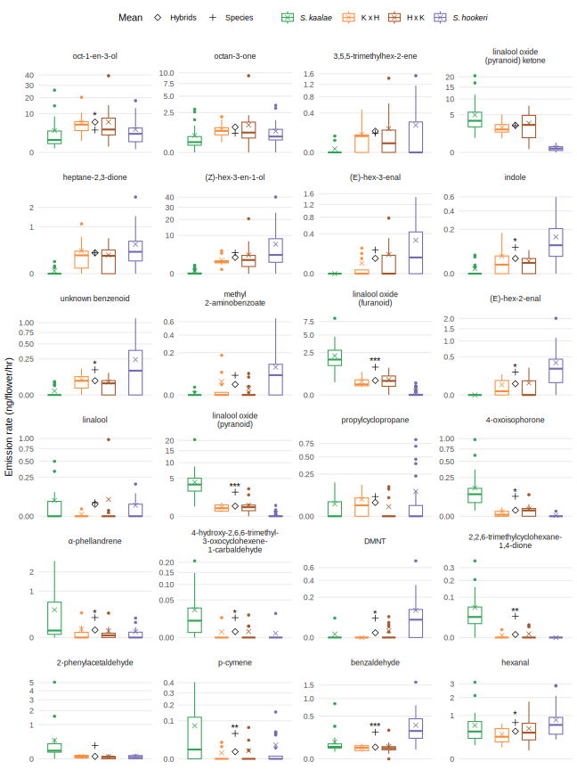
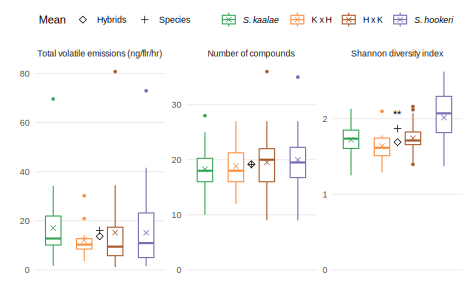

Sample inventory
#Load filtered scent data (includes octenol and hexenol) and metadata
load("./data/UCI_GCMS/sdata3_hexoct.Rdata")
#TODO: some red flags in the Notes column - possible wrong IDseve <- -2.5 #hours before sunset
specs <- kaho <- c("HOOK", "KAAL","KAHO")
f <- spec %in% specs
speca <- replace(spec, sv$Population == "KK", "KAAL"); speca <- replace(speca, sv$Population == "HH", "HOOK")
specp <- factor(speca[f], levels=c("HOOK","KAHO","KAAL"))#REORDER
kahomp <- data.frame(Plant=as.character(sv[sv$Species == "kaho","Plant"]), stringsAsFactors = F)
kahomp <- reshape2::colsplit(string=kahomp$Plant, pattern=" x ", names=c("Maternal", "Paternal"))
kahopops <- c("879WKG", "WK","3587WP","892WKG","904WPG")
kahomp <- as.data.frame(apply(kahomp, c(1,2), function(x) strsplit(x, "-")[[1]][1]))
kahomp <- lapply(kahomp, plyr::mapvalues, from = c("794","866","891","899","879","892","904","3587"), to = c("WK","WK","WK","WK","879WKG","892WKG","904WPG","3587WP"))
kahomp <- lapply(kahomp, factor, levels=kahopops)
sv$Population2 <- sv$Population
sv[sv$Species == "kaho",]$Population2 <- ifelse(kahomp$Maternal==kahomp$Paternal, as.character(kahomp$Maternal), "Interpop")
sv$Population2 <- factor(sv$Population2)
sv$ftot <- rowSums(vol)/sv$Flrs
sv$SpeciesR <- ifelse(speca=="KAHO",as.character(sv$Population),as.character(speca))
sv$SpeciesR <- factor(sv$SpeciesR, levels=c("KAAL","KH","HK","HOOK"))
levels(sv$SpeciesR) <- c("S. kaalae", "K x H", "H x K", "S. hookeri")
sv$Individual <- with(sv, factor(paste(Species, Population, Plant, Cutting)))
volhyb <- vol[f,]
volhyb <- volhyb[order(as.integer(specp)),]
specp <- sort(specp)
svhyb <- sv[rownames(volhyb),]
volhyb <- volhyb[order(as.integer(specp), svhyb$Population),]
volhyb <- volhyb[,colSums(volhyb)>0]
pavolhyb <- volhyb
pavolhyb[pavolhyb>0] <-1
svolhyb <- decostand(volhyb, "total")
fvolhyb <- volhyb / svhyb$Flrs
svhyb$Population <- as.factor(svhyb$Population)
svhyb$DN <- factor(ifelse(svhyb$StartSunset > eve, "Night", "Day"))
svhyb$Inflo[is.na(svhyb$Inflo)]<-1:sum(is.na(svhyb$Inflo))
svhyb$Diurnal[is.na(svhyb$Diurnal)]<-1:sum(is.na(svhyb$Diurnal))
svhyb$plants <- hybplants <- paste(svhyb$Population, svhyb$Plant, sep="-")
svhyb$plantsi <- hybplantsi <- paste(svhyb$Population, svhyb$Plant, svhyb$Cutting, sep="-")
svhyb$parents <- hybplants
svhyb$parents[grepl(" x ", hybplants, fixed=T)]<-1:sum(grepl(" x ", hybplants, fixed=T))#only group by parents, set the crosses to an integer sequence to force them not to group
#TODO this splits resamples of the sample cross plant into multiple "parents"
#TODO also, NMDS below implies these are different cross parents but they are really just the original plant in the parent generation that was used for cuttings
hybparents <- svhyb$parents
svhyb$Inflo[is.na(svhyb$Inflo)]<-1:sum(is.na(svhyb$Inflo))
svhyb$Diurnal[is.na(svhyb$Diurnal)]<-1:sum(is.na(svhyb$Diurnal))
svhyb$plantsdn <- hybplantsdn <- paste(svhyb$Population, svhyb$Plant, svhyb$Cutting, svhyb$Diurnal, sep="-")
svhyb$plantsinflo <- hybplantsinflo <- paste(svhyb$Population, svhyb$Plant, svhyb$Cutting, svhyb$Inflo, sep="-")
svhyb$plantsinflodate <- hybplantsinflodate <- paste(svhyb$Population, svhyb$Plant, svhyb$Cutting, svhyb$Inflo, svhyb$SampleDate, sep="-")
volhybn <- volhyb[svhyb$DN == "Night",]
specpn <- specp[svhyb$DN == "Night"]
svolhybn <- decostand(volhybn, "total")
svhybn <- svhyb[svhyb$DN == "Night",]
fvolhybn <- volhybn / svhybn$Flrs
specpd <- svhybn$SpeciesR
hybplantsn <- svhybn$plants
hybplantsin <- svhybn$plantsi
hybparentsn <- svhybn$parents
hybplantsdnn <- svhybn$plantsdn
hybplantsinflon <- svhybn$plantsinflo
hybplantsinflodaten <- svhybn$plantsinflodate
#hybpops <- c("3587WP", "879WKG", "881KHV", "892WKG", "904WPG", "HH", "HK", "KH" , "KK" , "WK")
hybpopsp <- c("K", "H", "K", "K", "K", "HH", "HK", "KH", "KK", "H")
hybcolr <- setNames(c(brewer.pal(3,"Greens")[3],brewer.pal(9,"Oranges")[5], brewer.pal(9,"Set1")[7], brewer.pal(3,"Purples")[3]),levels(sv$SpeciesR))
hyblabs <- c(expression(italic("S. kaalae")),"K x H", "H x K", expression(italic("S. hookeri")))Samples by plant population or type of hybrid cross
inventory <- data.frame(row.names=levels(svhyb$Population), Cross=hybpopsp,
Samples=as.vector(table(svhyb$Population)))[order(hybpopsp), ]
kable(inventory, caption="samples of each cross and parents")| Cross | Samples | |
|---|---|---|
| 879WKG | H | 1 |
| WK | H | 12 |
| HH | HH | 31 |
| HK | HK | 28 |
| 3587WP | K | 4 |
| 881KHV | K | 4 |
| 892WKG | K | 2 |
| 904WPG | K | 3 |
| KH | KH | 14 |
| KK | KK | 29 |
Evening samples by cross
crosses and parent samples added on diagonal in the evening
remember to add the 4 881KHV samples (not used to make crosses since from the Ko’olaus)
there are also two samples without populations (HH and KH)
kahomp <- data.frame(Plant=svhyb[svhyb$Species == "kaho" & svhyb$StartSunset > eve,"Plant"])#line differs from above - just evening
kahomp <- reshape2::colsplit(string=kahomp$Plant, pattern=" x ", names=c("Maternal", "Paternal"))
kahopops <- c("879WKG", "WK","3587WP","892WKG","904WPG")
kahomp <- as.data.frame(apply(kahomp, c(1,2), function(x) strsplit(x, "-")[[1]][1]))
kahomp <- lapply(kahomp, plyr::mapvalues, from = c("794","866","891","899","879","892","904","3587"), to = c("WK","WK","WK","WK","879WKG","892WKG","904WPG","3587WP"))
kahomp <- lapply(kahomp, factor, levels=kahopops)
tkahomp <- table(kahomp)
(t(lower.tri(tkahomp)*tkahomp)+tkahomp*upper.tri(tkahomp, diag=T))%>%
kable(caption="crosses moved to upper triangle")| 879WKG | WK | 3587WP | 892WKG | 904WPG | |
|---|---|---|---|---|---|
| 879WKG | 9 | 7 | 11 | 1 | 7 |
| WK | 0 | 6 | 7 | 6 | 8 |
| 3587WP | 0 | 0 | 5 | 4 | 8 |
| 892WKG | 0 | 0 | 0 | 3 | 2 |
| 904WPG | 0 | 0 | 0 | 0 | 4 |
mtkahomp <- 6-tkahomp
mtkahomp <- as.data.frame(mtkahomp)
inventory.cross <- tkahomp+diag(table(svhyb$Population[svhyb$StartSunset > eve])[rownames(tkahomp)])
kable(inventory.cross, caption="samples by population cross")| 879WKG | WK | 3587WP | 892WKG | 904WPG | |
|---|---|---|---|---|---|
| 879WKG | 10 | 2 | 8 | 1 | 3 |
| WK | 5 | 18 | 4 | 6 | 6 |
| 3587WP | 3 | 3 | 9 | 0 | 6 |
| 892WKG | 0 | 0 | 4 | 5 | 1 |
| 904WPG | 4 | 2 | 2 | 1 | 6 |
write.csv(inventory.cross, "output/hybrids/inventory_cross_parents.csv")
#how many maternal and paternal parent plants?
mp <- sv %>% filter(Species =="kaho") %>% select(Plant) %>% mutate(Plant=as.character(Plant)) %>%
separate(Plant, sep=" x ", into = c("Maternal", "Paternal")) %>%
separate(Maternal, sep="-", into = c("MomPop", "MomPlant"), remove=F, extra="merge") %>%
separate(Paternal, sep="-", into = c("DadPop", "DadPlant"), remove=F, extra="merge")
mp %>% group_by(MomPop) %>% summarize(moms=n_distinct(MomPlant)) %>% kable(caption="maternal plants")| MomPop | moms |
|---|---|
| 3587 | 5 |
| 794 | 2 |
| 866 | 1 |
| 879 | 4 |
| 892 | 3 |
| 899 | 1 |
| 904 | 3 |
| NA | 1 |
mp %>% group_by(DadPop) %>% summarize(moms=n_distinct(DadPlant)) %>% kable(caption="paternal plants")| DadPop | moms |
|---|---|
| 3587 | 4 |
| 794 | 2 |
| 866 | 2 |
| 879 | 4 |
| 892 | 3 |
| 899 | 1 |
| 904 | 3 |
| NA | 1 |
Resampled plants
Some plants were used for more than one sample - day/night or on the same inflorescence:
kable(cbind(Plants=table(specp[!duplicated(cbind(specp,hybplantsi))]),
table(data.frame(specp,Diurnal=svhyb$DN))), caption="Plants sampled by type and time")| Plants | Day | Night | |
|---|---|---|---|
| HOOK | 32 | 8 | 36 |
| KAHO | 33 | 1 | 41 |
| KAAL | 32 | 4 | 38 |
kable(cbind(Plants=table(svhybn$SpeciesR[!duplicated(cbind(svhybn$SpeciesR,hybplantsin))]),
table(data.frame(svhybn$SpeciesR,Diurnal=svhybn$DN))), caption="Plants sampled at night by type")| Plants | Day | Night | |
|---|---|---|---|
| S. kaalae | 32 | 0 | 38 |
| K x H | 12 | 0 | 13 |
| H x K | 21 | 0 | 28 |
| S. hookeri | 32 | 0 | 36 |
# svhybn %>% group_by(Individual) %>% filter(n()>1) %>% ungroup() %>% #find duplicates
# dplyr::select(SampleDate, Individual, ftot, Leaves:Flrs) %>% arrange(Individual, SampleDate) %>%
# kable(caption="Multiple samples of same plant")
print("Plants that have multiple samples:")[1] "Plants that have multiple samples:"svhybn %>% select(Individual, Inflo, SampleDate, Notes) %>% group_by(Individual) %>% filter(n()>1) %>%
arrange(Individual, SampleDate) %>% distinct(Individual) %>% nrow #%>% print(n=Inf)[1] 13count(svhyb[!duplicated(cbind(specp,hybplantsi)),], Population) %>% kable(caption="Number of plants by population")| Population | n |
|---|---|
| 3587WP | 4 |
| 879WKG | 1 |
| 881KHV | 3 |
| 892WKG | 1 |
| 904WPG | 2 |
| HH | 22 |
| HK | 21 |
| KH | 12 |
| KK | 22 |
| WK | 9 |
Evening plants by cross
remember to add the 3 881KHV plants (not used to make crosses since from the Ko’olaus)
there are also two plants from crosses without populations (HH and KH) - added these to 879x879 and 892xWK in the inventory
svhybn.plants <- svhybn %>% group_by(Species, SpeciesR, Population, Plant, Cutting, Individual) %>% summarize_at(vars(ftot), mean)
kahomp.plants <- data.frame(Plant=svhybn.plants[svhybn.plants$Species == "kaho","Plant"])
kahomp.plants <- reshape2::colsplit(string=kahomp.plants$Plant, pattern=" x ", names=c("Maternal", "Paternal"))
kahomp.plants <- as.data.frame(apply(kahomp.plants, c(1,2), function(x) strsplit(x, "-")[[1]][1]))
kahomp.plants <- lapply(kahomp.plants, plyr::mapvalues, from = c("794","866","891","899","879","892","904","3587"), to = c("WK","WK","WK","WK","879WKG","892WKG","904WPG","3587WP"))
kahomp.plants <- lapply(kahomp.plants, factor, levels=kahopops)
tkahomp.plants <- table(kahomp.plants)
kable(tkahomp.plants, caption = "Number of plant sampled in the evening, by cross")| 879WKG | WK | 3587WP | 892WKG | 904WPG | |
|---|---|---|---|---|---|
| 879WKG | 9 | 2 | 3 | 1 | 3 |
| WK | 4 | 6 | 4 | 5 | 5 |
| 3587WP | 2 | 3 | 5 | 0 | 3 |
| 892WKG | 0 | 0 | 3 | 3 | 1 |
| 904WPG | 4 | 2 | 2 | 1 | 4 |
write.csv(tkahomp.plants, "output/hybrids/inventory_cross_plants.csv")
table(svhybn.plants$Population)[rownames(tkahomp)] %>% kable(caption = "add these parent plants to the diagonal")| Var1 | Freq |
|---|---|
| 879WKG | 1 |
| WK | 9 |
| 3587WP | 4 |
| 892WKG | 1 |
| 904WPG | 2 |
Sampling times
print("night pumping times, hrs:")[1] "night pumping times, hrs:"summary(as.numeric(as.difftime(format.POSIXct(svhyb$SampleDateStart[svhyb$DN=="Night"], tz="GMT+8", format="%H:%M"),format="%H:%M"))) #convert PDT to PST when needed Min. 1st Qu. Median Mean 3rd Qu. Max.
16.40 18.77 19.45 19.30 20.02 21.27 print("night pumping times, hr since sunset:")[1] "night pumping times, hr since sunset:"summary(as.numeric(svhyb$StartSunset[svhyb$DN=="Night"])) Min. 1st Qu. Median Mean 3rd Qu. Max.
-2.434 1.196 1.895 1.702 2.482 4.545 Tables of volatiles
minsamp <- 2
volhyb.cut <- volhyb[,colSums(volhyb>0) >= minsamp]
#tables for parent species only
exclude <- specp == "KAHO"
volpar <- volhyb.cut[!exclude,]; specpar <- factor(specp[!exclude]); svpar <- svhyb[!exclude,];
parplantsdn <- paste(svpar$Population, svpar$Plant, svpar$Cutting, svpar$Diurnal, sep="-")
hybplantsdn <- paste(svhyb$Population, svhyb$Plant, svhyb$Cutting, svhyb$Diurnal, sep="-")
volparn <- volpar[svpar$StartSunset > eve,]
svparn <- svpar[svpar$StartSunset > eve,]
svolparn <- decostand(volpar[svpar$StartSunset > eve,], "total")
specparn <- specpar[svpar$StartSunset > eve]
svdup <- svpar[duplicated(paste(svpar$Individual, svpar$DN)) | duplicated(paste(svpar$Individual, svpar$DN), fromLast=TRUE),]
svdup_diel <- svpar[duplicated(svpar$Individual) | duplicated(svpar$Individual, fromLast=TRUE),]
#mean proportion of peak area (not converted to ng - not very meaningful)
svolhyb.mean <- aggregate(. ~ specp, svolhyb, mean)[,-1]
rownames(svolhyb.mean) <- levels(specp)
tsvolhyb.mean <- as.data.frame(t(svolhyb.mean))
tsvolhyb.chems <- cbind(tsvolhyb.mean, chems[match(rownames(tsvolhyb.mean), chems$Name),])
write.table(tsvolhyb.chems, file="output/hybrids/tsvolhybchems3.csv", sep="\t", row.names=F)
#mean of nonzero emissions (not very meaningful)
volhybn.mean <- aggregate(. ~ specpn, volhybn, function(x) mean(x[x>0]))[,-1]
rownames(volhybn.mean) <- levels(specpn)
tvolhybn.mean <- as.data.frame(t(volhybn.mean))
#convert to nanograms using standards for each compound class
#TODO move this to sdata3
chems.pc.class <- read.table("data/UCI_GCMS/chemspc3_classes.csv", sep="\t", header=T)
multipliers <- read.table("data/UCI_GCMS/multipliers.csv", header=T, sep="\t")
ngvolhyb <- volhyb * multipliers$ngPerArea[match(chems.pc.class$Class,multipliers$Class)][col(volhyb)]
ngvolhybn <- volhybn * multipliers$ngPerArea[match(chems.pc.class$Class,multipliers$Class)][col(volhybn)]
ngfvolhyb <- ngvolhyb / svhyb$Flrs
ngfvolhybn <- ngvolhybn / svhybn$Flrs
svhybn$ngftot <- rowSums(ngvolhybn)/svhybn$Flrs
ngfvolhybn.mean <- aggregate(. ~ specpn, ngfvolhybn, function(x) mean(x[x>0]))[,-1] #nonzero only !!!
rownames(ngfvolhybn.mean) <- levels(specpn)
tngfvolhybn.mean <- as.data.frame(t(ngfvolhybn.mean))
#proportion of peak areas (not converted to ng - not very meaningful)
volhybn.prop <- aggregate(. ~ specpn, volhybn, function(x) sum(x>0)/length(x))[,-1]
rownames(volhybn.prop) <- levels(specpn)
tvolhybn.prop <- as.data.frame(t(volhybn.prop))
#combine tables for the mean nonzero emissions, nanograms per flower, and proportion of peak areas
tvolhybn.chems <- cbind(tvolhybn.mean, tngfvolhybn.mean, tvolhybn.prop, chems.pc[match(rownames(tvolhybn.mean), chems.pc$Name),])
write.table(tvolhybn.chems, file="output/hybrids/tvolhybnchems3_evening.csv", sep="\t", row.names=T, col.names = NA)
#mean and SD of total nanograms per flower per hr
(aggregate(rowSums(ngfvolhyb), list(svhyb$SpeciesR,svhyb$DN), function(x) c(mean(x), sd(x)))) Group.1 Group.2 x.1 x.2
1 S. kaalae Day 6.284171 4.428269
2 K x H Day 1.531748 NA
3 S. hookeri Day 12.533482 12.953003
4 S. kaalae Night 17.695927 14.051407
5 K x H Night 20.668768 30.310340
6 H x K Night 18.206762 19.954865
7 S. hookeri Night 12.347758 10.056920#proportion of evening peak area for both parents
svolparn.mean <- aggregate(. ~ specparn, svolparn, mean)[,-1]
rownames(svolparn.mean) <- levels(specparn)
tsvolparn.mean <- as.data.frame(t(svolparn.mean))
tsvolparn.chems <- cbind(tsvolparn.mean, chems[match(rownames(tsvolparn.mean), chems$Name),])
write.table(tsvolparn.chems, file="output/hybrids/tsvolparnchems3.csv", sep="\t", row.names=F)#prep GC data for Dryad
ngvolpar <- volpar * multipliers$ngPerArea[match(chems.pc.class$Class,multipliers$Class)][col(volpar)]
svpar %>% select(Filename, SpeciesR, Population2, plantsi, Leaves, Inflor, Mphase, Fphase, Closed, Buds, Temp, StartSunset) %>% dplyr::rename(Species = SpeciesR, Population = Population2, Plant = plantsi, Bracts = Leaves) %>%
mutate(StartSunset = round(as.numeric(StartSunset), 2),
Temp = as.integer(Temp),
Plant=as.integer(factor(Plant)),
Species = str_replace(as.character(Species), "S.", "Schiedea"),
Population = replace_na(Population, "Interpop")) %>%
arrange(Species, Population, Plant, Bracts, Inflor, Mphase, Fphase, Closed, Buds) %>%
left_join(ngvolpar %>% rownames_to_column("Filename") %>% mutate_if(is.numeric, round, 2)) %>% #volpar has peak areas / hr (not normalized by number of flowers)
select(-Filename) %>%
write_csv("output/hybrids/Schiedea_GCMS.csv")Total emissions and compound diversity
svhybn.plants <- svhybn %>% group_by(SpeciesR, Individual) %>% summarize_at(vars(ngftot), mean)
ftot.medians <- svhybn.plants %>% group_by(SpeciesR) %>% summarize_at("ngftot", list( n=length, ngftot=median)) %>% kable(caption="median emmisions per flower per hour")
lm.ftot <- lm(ngftot~SpeciesR, data=svhybn)
print("test if hybrids are different from arithmetic average of two species:")[1] "test if hybrids are different from arithmetic average of two species:"lm.ftot %>% multcomp::glht(linfct = multcomp::mcp(SpeciesR=c("`H x K` - 0.5 * `S. kaalae` - 0.5 * `S. hookeri`== 0",
"`K x H` - 0.5 * `S. kaalae` - 0.5 * `S. hookeri`== 0"))) %>%
summary()
Simultaneous Tests for General Linear Hypotheses
Multiple Comparisons of Means: User-defined Contrasts
Fit: lm(formula = ngftot ~ SpeciesR, data = svhybn)
Linear Hypotheses:
Estimate Std. Error
`H x K` - 0.5 * `S. kaalae` - 0.5 * `S. hookeri` == 0 3.185 3.804
`K x H` - 0.5 * `S. kaalae` - 0.5 * `S. hookeri` == 0 5.647 5.156
t value Pr(>|t|)
`H x K` - 0.5 * `S. kaalae` - 0.5 * `S. hookeri` == 0 0.837 0.639
`K x H` - 0.5 * `S. kaalae` - 0.5 * `S. hookeri` == 0 1.095 0.470
(Adjusted p values reported -- single-step method)print("test if hybrids are different from arithmetic average of two species")[1] "test if hybrids are different from arithmetic average of two species"lm.ftot %>% multcomp::glht(linfct = multcomp::mcp(SpeciesR="Tukey")) %>% summary
Simultaneous Tests for General Linear Hypotheses
Multiple Comparisons of Means: Tukey Contrasts
Fit: lm(formula = ngftot ~ SpeciesR, data = svhybn)
Linear Hypotheses:
Estimate Std. Error t value Pr(>|t|)
K x H - S. kaalae == 0 2.9728 5.5082 0.540 0.948
H x K - S. kaalae == 0 0.5108 4.2696 0.120 0.999
S. hookeri - S. kaalae == 0 -5.3482 3.9871 -1.341 0.534
H x K - K x H == 0 -2.4620 5.7535 -0.428 0.973
S. hookeri - K x H == 0 -8.3210 5.5471 -1.500 0.436
S. hookeri - H x K == 0 -5.8590 4.3196 -1.356 0.524
(Adjusted p values reported -- single-step method)Heatmap
#1 dimensional NMDS for ordering samples in heatmap
set.seed(1)
mdshybn1 <- metaMDS(decostand(ngvolhybn, method="hellinger"),k=1,try=200, autotransform=F, trace=0)
srt <- order(svhybn$SpeciesR, -mdshybn1$points, decreasing=T)
#Include volatiles found in at least this many samples
mincount <- 15
callback = function(hc, mat){
sv = svd(t(mat))$v[,1]
dend = reorder(as.dendrogram(hc), wts = sv)
as.hclust(dend)
}
pheatmap(as.matrix(t(ngfvolhybn[,colSums(pavolhyb[svhyb$DN=="Night",])>mincount][srt,]))^(1/3),
cluster_cols=F, show_colnames=F,
clustering_method="mcquitty", clustering_distance_rows="correlation",
clustering_callback = function(hc, ...){dendsort(hc, type="average")},
scale="none", color=inferno(512),
annotation_col = data.frame(Species=as.integer(svhybn$SpeciesR)[srt], row.names=rownames(ngfvolhybn)[srt]),
annotation_colors = list(Species=hybcolr),
gaps_col = which(as.logical(diff(as.integer(svhybn$SpeciesR)[srt]))),
cellwidth = 3.5, cellheight = 14, fontsize = 10, border_color = NA, legend=F, legend_breaks=NA, annotation_legend=F, cutree_rows=5
)
grid.text(rev(levels(svhyb$SpeciesR))[c(1,4)], x=c(0.165,0.54),y=0.964, gp=gpar(fontsize=10, col="white", fontface=4))
grid.text(rev(levels(svhyb$SpeciesR))[c(2,3)], x=c(0.317,0.417),y=0.964, gp=gpar(fontsize=10, col="white", fontface=2))
Boxplots of each volatile
diversity_vars <- c(ngftot = "Total volatile emissions (ng/flr/hr)",
num_compounds="Number of compounds",
shannon="Shannon diversity index")
svhybn$num_compounds <- rowSums(pavolhyb[svhyb$DN=="Night",])
svhybn$shannon <- diversity(volhybn, index="shannon")
multiline <- c("DMNT"="(3E)-4,8-dimethylnona-1,3,7-triene",
"2,2,6-trimethylcyclohexane-\n1,4-dione"="2,2,6-trimethylcyclohexane-1,4-dione",
"4-hydroxy-2,6,6-trimethyl-\n3-oxocyclohexene-\n1-carbaldehyde"=
"4-hydroxy-2,6,6-trimethyl-3-oxocyclohexene-1-carbaldehyde")
minprop <- 0.2 #compound must occur in greater than this proportion of evening samples
ngfvolhybn.top <- ngfvolhybn %>%
select(where(~sum(.x>0) > length(.x) * minprop)) %>%
bind_cols(select(svhybn, Species=SpeciesR, all_of(names(diversity_vars)))) %>%
pivot_longer(!Species, names_to="variable") %>%
mutate(variable = fct_recode(variable, !!!multiline))
#compare mean of hybrid cross directions to mean of parent species
#compare hybrid cross directions to each other
tests.glht <- ngfvolhybn.top %>% group_by(variable) %>% nest() %>%
mutate(model = map(data, ~lm(value ~ Species, data=.x)),
emm = map(model, ~tidy(summary(emmeans(.x, specs="Species")))),
test.direction = map(model, ~tidy(multcomp::glht(.x, linfct = multcomp::mcp(Species=c("`K x H` - `H x K` == 0"))))),
test.parmean = map(model, ~tidy(multcomp::glht(.x, linfct = multcomp::mcp(Species=c("0.5 * `K x H` + 0.5 * `H x K` - 0.5 * `S. kaalae` - 0.5 * `S. hookeri`== 0"))))))
tests.emm <- tests.glht %>% mutate(maximum = map_dbl(data, ~max(.x$value))) %>%
select(variable, emm, maximum) %>% unnest(emm)
tests.index <- tests.emm %>%
select(variable, Species, maximum, estimate) %>% pivot_wider(names_from=Species, values_from=estimate) %>%
mutate(par.mean = (`S. hookeri` + `S. kaalae`)/2,
hyb.mean = (`K x H`+`H x K`)/2,
hyb.index = if_else(`S. kaalae`> `S. hookeri`,
(hyb.mean -`S. hookeri`)/ `S. kaalae`,
(hyb.mean -`S. kaalae`)/ `S. hookeri`))
tests.direction <- tests.glht %>% select(variable, test.direction) %>% unnest(test.direction) %>%
select(variable, direction.p.value = adj.p.value)
tests.parmean <- tests.glht %>% select(variable, test.parmean) %>% unnest(test.parmean) %>%
select(variable, parmean.p.value = adj.p.value)
boxplot.order <- tests.index %>% arrange(-hyb.index) %>% pull(variable)
tests.all <- tests.index %>% left_join(tests.direction) %>% left_join(tests.parmean) %>%
mutate(variable=factor(variable, levels=boxplot.order))
tests.vols <- tests.all %>% filter(!variable %in% names(diversity_vars)) %>%
mutate(across(contains("p.value"), ~p.adjust(.x, method="fdr")))
tests.vols %>% select(-c(maximum, hyb.index)) %>% mutate(variable=str_remove_all(variable, "\n")) %>%
kable(caption = "tests of total emissions and diversity", digits=3)| variable | S. kaalae | K x H | H x K | S. hookeri | par.mean | hyb.mean | direction.p.value | parmean.p.value |
|---|---|---|---|---|---|---|---|---|
| benzaldehyde | 0.076 | 0.033 | 0.053 | 0.227 | 0.151 | 0.043 | 0.671 | 0.000 |
| octan-3-one | 0.630 | 1.717 | 1.433 | 0.797 | 0.713 | 1.575 | 0.648 | 0.024 |
| 4-oxoisophorone | 0.130 | 0.003 | 0.028 | 0.000 | 0.065 | 0.016 | 0.494 | 0.031 |
| indole | 0.002 | 0.022 | 0.057 | 0.122 | 0.062 | 0.040 | 0.456 | 0.438 |
| 2-phenylacetaldehyde | 0.282 | 0.002 | 0.009 | 0.007 | 0.145 | 0.005 | 0.969 | 0.161 |
| methyl 2-aminobenzoate | 0.001 | 0.011 | 0.011 | 0.071 | 0.036 | 0.011 | 0.997 | 0.060 |
| 4-hydroxy-2,6,6-trimethyl-3-oxocyclohexene-1-carbaldehyde | 0.031 | 0.000 | 0.003 | 0.001 | 0.016 | 0.001 | 0.783 | 0.016 |
| DMNT | 0.001 | 0.000 | 0.010 | 0.121 | 0.061 | 0.005 | 0.864 | 0.093 |
| 2,2,6-trimethylcyclohexane-1,4-dione | 0.057 | 0.000 | 0.004 | 0.000 | 0.028 | 0.002 | 0.806 | 0.007 |
| propylcyclopropane | 0.021 | 0.001 | 0.047 | 0.071 | 0.046 | 0.024 | 0.239 | 0.350 |
| 3,5,5-trimethylhex-2-ene | 0.003 | 0.241 | 0.079 | 0.153 | 0.078 | 0.160 | 0.059 | 0.116 |
| unknown benzenoid | 0.003 | 0.052 | 0.071 | 0.273 | 0.138 | 0.061 | 0.807 | 0.115 |
| oct-1-en-3-ol | 4.092 | 8.515 | 7.897 | 3.097 | 3.594 | 8.206 | 0.831 | 0.010 |
| linalool oxide (pyranoid) ketone | 4.528 | 2.991 | 3.730 | 0.110 | 2.319 | 3.360 | 0.437 | 0.073 |
| linalool oxide (pyranoid) | 4.054 | 0.459 | 0.578 | 0.008 | 2.031 | 0.519 | 0.875 | 0.001 |
| (E)-hex-3-enal | 0.000 | 0.089 | 0.071 | 0.354 | 0.177 | 0.080 | 0.835 | 0.060 |
| linalool oxide (furanoid) | 2.105 | 0.286 | 0.364 | 0.022 | 1.064 | 0.325 | 0.812 | 0.000 |
| hexanal | 0.586 | 0.567 | 0.591 | 1.013 | 0.800 | 0.579 | 0.920 | 0.142 |
| (E)-hex-2-enal | 0.000 | 0.038 | 0.063 | 0.284 | 0.142 | 0.051 | 0.625 | 0.003 |
| linalool | 0.031 | 0.022 | 0.001 | 0.021 | 0.026 | 0.011 | 0.271 | 0.206 |
| (Z)-hex-3-en-1-ol | 0.047 | 4.303 | 2.163 | 3.779 | 1.913 | 3.233 | 0.141 | 0.136 |
| heptane-2,3-dione | 0.004 | 0.145 | 0.308 | 0.312 | 0.158 | 0.227 | 0.181 | 0.352 |
| α-phellandrene | 0.369 | 0.051 | 0.018 | 0.028 | 0.198 | 0.035 | 0.775 | 0.022 |
| p-cymene | 0.094 | 0.007 | 0.006 | 0.025 | 0.060 | 0.007 | 0.969 | 0.018 |
emm.vols <- tests.emm %>% filter(!variable %in% names(diversity_vars))
signif.num <- function(x) {
cut(x, breaks = c(0, 0.001, 0.01, 0.05, 1),
labels = c("***", "**", "*", " "), include.lowest = T)
}
ngfvolhybn.top %>% mutate(variable=factor(variable, levels=boxplot.order)) %>%
filter(!variable %in% names(diversity_vars)) %>%
ggplot() + geom_boxplot(aes(x=Species, y=value, color=Species), width=0.5, outlier.size=1) +
geom_text(data=tests.vols, aes(label=signif.num(parmean.p.value), x=2.5, y=pmax(par.mean,hyb.mean)*1.5)) +
geom_point(data=emm.vols, aes(x=Species, y=pmax(estimate,0), color=Species), shape=4, size=2)+
geom_point(data=tests.vols, aes(x=2.5, y=par.mean, shape="parmean"), size=2)+
geom_point(data=tests.vols, aes(x=2.5, y=hyb.mean, shape="hybmean"), size=2)+
scale_shape_manual("Mean",values=c(parmean=3, hybmean=5), labels=c(parmean="Species", hybmean="Hybrids"))+
facet_wrap(vars(variable), scales="free_y", ncol=4, labeller = labeller(variable = label_wrap_gen(18))) +
scale_color_manual("", values=hybcolr, labels=hyblabs) +
scale_y_sqrt("Emission rate (ng/flower/hr)", limits=c(0,NA)) + theme_minimal() +
theme(axis.text.x=element_blank(), axis.title.x=element_blank(),
panel.grid.major.x=element_blank(), panel.grid.minor.y=element_blank(), legend.position = "top")
Total emissions and diversity
tests.diversity <- tests.all %>% filter(variable %in% names(diversity_vars)) %>%
mutate(across(contains("p.value"), ~p.adjust(.x, method="fdr")))
tests.diversity %>% select(-c(maximum, hyb.index)) %>% kable(caption = "tests of total emissions and diversity", digits=3)| variable | S. kaalae | K x H | H x K | S. hookeri | par.mean | hyb.mean | direction.p.value | parmean.p.value |
|---|---|---|---|---|---|---|---|---|
| ngftot | 17.696 | 20.669 | 18.207 | 12.348 | 15.022 | 19.438 | 0.670 | 0.210 |
| num_compounds | 17.474 | 16.615 | 19.250 | 18.917 | 18.195 | 17.933 | 0.025 | 0.710 |
| shannon | 1.574 | 1.645 | 1.697 | 2.084 | 1.829 | 1.671 | 0.560 | 0.005 |
emm.diversity <- tests.emm %>% filter(variable %in% names(diversity_vars))
ngfvolhybn.top %>% filter(variable %in% names(diversity_vars)) %>%
ggplot() + geom_boxplot(aes(x=Species, y=value, color=Species), width=0.5, outlier.size=1) +
geom_text(data=tests.diversity, aes(label=signif.num(parmean.p.value), x=2.5, y=pmax(par.mean,hyb.mean)*1.1)) +
geom_point(data=emm.diversity, aes(x=Species, y=pmax(estimate,0), color=Species), shape=4, size=2)+
geom_point(data=tests.diversity, aes(x=2.5, y=par.mean, shape="parmean"), size=2)+
geom_point(data=tests.diversity, aes(x=2.5, y=hyb.mean, shape="hybmean"), size=2)+
scale_shape_manual("Mean",values=c(parmean=3, hybmean=5), labels=c(parmean="Species", hybmean="Hybrids"))+
facet_wrap(vars(variable), scales="free_y", ncol=4, labeller = as_labeller(diversity_vars)) +
scale_color_manual("", values=hybcolr, labels=hyblabs) +
scale_y_continuous("", limits=c(0,NA)) + theme_minimal() +
theme(axis.text.x=element_blank(), axis.title.x=element_blank(),
panel.grid.major.x=element_blank(), panel.grid.minor.y=element_blank(), legend.position = "top")
NMDS ordination
Each sample (includes resamples)
set.seed(1)
mdshybn <- metaMDS(decostand(volhybn, method="hellinger"),k=2,try=200, autotransform=F, trace=0)
mdshybn
Call:
metaMDS(comm = decostand(volhybn, method = "hellinger"), k = 2, try = 200, autotransform = F, trace = 0)
global Multidimensional Scaling using monoMDS
Data: decostand(volhybn, method = "hellinger")
Distance: bray
Dimensions: 2
Stress: 0.1235848
Stress type 1, weak ties
Best solution was not repeated after 20 tries
The best solution was from try 0 (metric scaling or null solution)
Scaling: centring, PC rotation, halfchange scaling
Species: expanded scores based on 'decostand(volhybn, method = "hellinger")' hullcross <- gg_ordiplot(mdshybn, groups = as.factor(hybplantsn), plot=F)$df_hull
hullparents <- gg_ordiplot(mdshybn, groups = as.factor(hybparentsn), plot=F)$df_hull
hullplantsi <- gg_ordiplot(mdshybn, groups = as.factor(hybplantsin), plot=F)$df_hull
hullplantsinflo <- gg_ordiplot(mdshybn, groups = as.factor(hybplantsinflon), plot=F)$df_hull
hullplantsinflodate <- gg_ordiplot(mdshybn, groups = as.factor(hybplantsinflodaten), plot=F)$df_hull
obj <- fortify(mdshybn)
obj$Sample <- NA; obj$Sample[obj$score=="sites"] <- svhybn$Sample
obj <- obj %>% left_join(svhybn %>% dplyr::select(c(Sample, SpeciesR, plants, parents, plantsi, plantsinflo, plantsinflodate, StartSunset))) %>% mutate(StartSunset = as.numeric(StartSunset))
obj$occur <- NA; obj$occur[obj$score=="species"] <- colSums(pavolhyb[svhyb$DN=="Night",])
obj$ftotal <- NA; obj$ftotal[obj$score=="species"] <- colSums(fvolhyb[svhyb$DN=="Night",])
obj <- obj %>% arrange(NMDS2, NMDS1)
hybnplot <- ggplot(obj, aes(x=-NMDS1, y=NMDS2)) +
geom_path(data=filter(obj, score=="sites"),aes(group=plants, color="cross"), linewidth=1) +
geom_path(data=filter(obj, score=="sites"),aes(group=parents, color="parents"), linewidth=1) +
geom_path(data=filter(obj, score=="sites"),aes(group=plantsi, color="plantsi"), linewidth=1) +
geom_path(data=filter(obj, score=="sites"),aes(group=plantsinflo, color="plantsinflo"), linewidth=1) +
geom_path(data=filter(obj, score=="sites"),aes(group=plantsinflodate, color="plantsinflodate"), linewidth=1) +
scale_color_manual("",breaks=c("cross","parents","plantsi","plantsinflo","plantsinflodate"), labels=c("Cross","Clone","Plant","Inflorescence","Bag"), values=c(cross="grey90", parents="grey60", plantsi="grey30", plantsinflo=brewer.pal(6,"Set1")[6],plantsinflodate=brewer.pal(6,"Set1")[1],sites="white",species=NA)) +
coord_fixed(xlim=range(obj$NMDS1[obj$score=="sites"])+c(-0.35,0.45),
ylim=range(obj$NMDS2[obj$score=="sites"])) + theme_pubr()+
scale_x_continuous(expand=c(0,0)) +
theme(legend.text = element_text(size=13)) +
guides(fill = guide_legend(override.aes = list(size=6)), color=guide_legend(override.aes=list(size=3)))
(hybplotn.spec <- hybnplot +
scale_fill_manual("", values=hybcolr, labels=hyblabs, na.translate=F) +
geom_point(data=obj[obj$score=="sites",], aes(fill=SpeciesR), shape=21, size=3, color="white") +
geom_text(data=obj[obj$score=="species" & obj$ftotal>1.5e4 & obj$occur>nrow(volhybn)*0.20,], aes(label=label), color="black", size=3.8) ) Mean of each plant
volhybn.mean <- volhybn %>% mutate(Sample = svhybn$Sample) %>%
left_join(dplyr::select(svhybn, c(Sample, SpeciesR, plants, parents, plantsi))) %>%
mutate_if(is.character, as.factor) %>%
group_by(SpeciesR, plants, plantsi) %>% summarize_if(is.numeric, mean)
#TODO temporarily got rid of parents since it was splitting multiple inflos on same plant
#TODO should take the mean by plant before most analyses
volhybn.mean.vols <- volhybn.mean %>% ungroup %>% select_if(is.numeric)
set.seed(1)
mdshybn.mean <- metaMDS(decostand(volhybn.mean.vols, method="hellinger"),k=2,try=100, autotransform=F, trace=0)
mdshybn.mean
Call:
metaMDS(comm = decostand(volhybn.mean.vols, method = "hellinger"), k = 2, try = 100, autotransform = F, trace = 0)
global Multidimensional Scaling using monoMDS
Data: decostand(volhybn.mean.vols, method = "hellinger")
Distance: bray
Dimensions: 2
Stress: 0.1219329
Stress type 1, weak ties
Best solution was repeated 1 time in 20 tries
The best solution was from try 9 (random start)
Scaling: centring, PC rotation, halfchange scaling
Species: expanded scores based on 'decostand(volhybn.mean.vols, method = "hellinger")' obj.mean <- fortify(mdshybn.mean)
obj.mean$SpeciesR <- factor(NA,levels=levels(volhybn.mean$SpeciesR)); obj.mean$SpeciesR[obj.mean$score=="sites"] <- volhybn.mean$SpeciesR
obj.mean$plants <- factor(NA,levels=levels(volhybn.mean$plants)); obj.mean$plants[obj.mean$score=="sites"] <- volhybn.mean$plants
#obj.mean$parents <- factor(NA,levels=levels(volhybn.mean$parents)); obj.mean$parents[obj.mean$score=="sites"] <- volhybn.mean$parents
obj.mean$occur <- NA; obj.mean$occur[obj.mean$score=="species"] <- colSums(pavolhyb[svhyb$DN=="Night",])
obj.mean$ftotal <- NA; obj.mean$ftotal[obj.mean$score=="species"] <- colSums(fvolhyb[svhyb$DN=="Night",])
obj.mean <- obj.mean %>% arrange(NMDS2, NMDS1)
(hybplotn.mean.spec <-
ggplot(obj.mean, aes(x=NMDS1, y=NMDS2)) +
coord_fixed(xlim=range(obj.mean$NMDS1[obj.mean$score=="sites"])+c(-0.55,0.1),
ylim=range(obj.mean$NMDS2[obj.mean$score=="sites"])) +
theme_pubr()+
scale_x_continuous(expand=c(0,0))+
theme(legend.text = element_text(size=13)) +
guides(fill = guide_legend(override.aes = list(size=5)), color=guide_legend(override.aes=list(size=3)))+
scale_fill_manual("", values=hybcolr, labels=hyblabs, na.translate=F) +
scale_color_manual("",breaks=c("cross","parents"), labels=c("Cross","Clone"), values=c(cross="grey90", parents="grey60")) +
geom_path(data=obj.mean[obj.mean$score=="sites",],aes(group=plants, color="cross"), size=1) +
#geom_path(data=obj.mean[obj.mean$score=="sites",],aes(group=parents, color="parents"), size=1) +
geom_point(data=obj.mean[obj.mean$score=="sites",], aes(fill=SpeciesR), shape=21, size=2.5, color="white") +
geom_text(data=obj.mean[obj.mean$score=="species" & obj.mean$ftotal>1.5e4 & obj.mean$occur>nrow(volhybn)*0.20,], aes(label=label), color="black", alpha=1, size=3.8)
) 
Variation at different levels
Variation among infloresences within plants
To measure between-trap variation, two traps were inserted into one bag, for two bags enclosing two infloresences on one plant (four traps total). Average them to get a dataset of unique infloresences.
volhybn.inflo <- volhybn %>% mutate(Sample = svhybn$Sample) %>%
left_join(dplyr::select(svhybn, c(Sample, SpeciesR, plants, parents, plantsi, Inflo, SampleDate))) %>%
mutate_if(is.character, as.factor) %>%
group_by(SpeciesR, plants, plantsi, Inflo, SampleDate) %>% #Inflos are marked by a letter but those are reused arbitrarily across dates
summarize_if(is.numeric, mean)
volhybn.inflo.vols <- volhybn.inflo %>% ungroup %>% select_if(is.numeric)
bd.plantsi.inflo <- betadisper(vegdist(decostand(volhybn.inflo.vols, method="hellinger"), method="bray"),
group = volhybn.inflo$plantsi)
meandist.plantsi.inflo <- bd.plantsi.inflo$group.distances %>% enframe(name="plantsi", value="centroid_dist") %>%
left_join(count(svhybn, plantsi)) %>% filter(n>1)#plants with resamples
summary(meandist.plantsi.inflo$centroid_dist) Min. 1st Qu. Median Mean 3rd Qu. Max.
0.0941 0.1036 0.1351 0.1653 0.1758 0.3835 Variation among plants in each cross type
#betadisper(vegdist(decostand(volhybn, method="hellinger"), method="bray"), group = specpn) #sample level
(bd.SpeciesR <- betadisper(vegdist(decostand(volhybn.mean.vols, method="hellinger"), method="bray"),
group = volhybn.mean$SpeciesR))
Homogeneity of multivariate dispersions
Call: betadisper(d = vegdist(decostand(volhybn.mean.vols, method =
"hellinger"), method = "bray"), group = volhybn.mean$SpeciesR)
No. of Positive Eigenvalues: 51
No. of Negative Eigenvalues: 45
Average distance to median:
S. kaalae K x H H x K S. hookeri
0.1932 0.2096 0.2179 0.3445
Eigenvalues for PCoA axes:
(Showing 8 of 96 eigenvalues)
PCoA1 PCoA2 PCoA3 PCoA4 PCoA5 PCoA6 PCoA7 PCoA8
7.1191 2.2186 1.1110 0.8133 0.6306 0.5209 0.4597 0.3559 anova(bd.SpeciesR)Analysis of Variance Table
Response: Distances
Df Sum Sq Mean Sq F value Pr(>F)
Groups 3 0.43035 0.143451 25.425 4.236e-12 ***
Residuals 93 0.52472 0.005642
---
Signif. codes: 0 '***' 0.001 '**' 0.01 '*' 0.05 '.' 0.1 ' ' 1TukeyHSD(bd.SpeciesR) Tukey multiple comparisons of means
95% family-wise confidence level
Fit: aov(formula = distances ~ group, data = df)
$group
diff lwr upr p adj
K x H-S. kaalae 0.016373023 -0.05014464 0.08289069 0.9174067
H x K-S. kaalae 0.024677537 -0.03050854 0.07986362 0.6472894
S. hookeri-S. kaalae 0.151314269 0.10218772 0.20044082 0.0000000
H x K-K x H 0.008304514 -0.06280586 0.07941489 0.9900399
S. hookeri-K x H 0.134941245 0.06842358 0.20145891 0.0000045
S. hookeri-H x K 0.126636732 0.07145065 0.18182281 0.0000002tibble(group=bd.SpeciesR$group, distance = bd.SpeciesR$distances) %>%
bind_rows(bd.plantsi.inflo$distances %>% enframe(value="distance") %>% filter(distance!=0) %>% mutate(group="within")) %>%
mutate(group = fct_relevel(group, c(levels(sv$SpeciesR), "within"))) %>%
ggplot(aes(x=group, y=distance, color=group)) +
geom_boxplot(outlier.shape = NA) + geom_jitter(width=0.15, height=0) + geom_vline(xintercept = 4.5) +
scale_color_manual(values=hybcolr, guide="none") +
scale_y_continuous(limits=c(0,NA), expand = expansion(c(0,0.05))) + scale_x_discrete(labels=c(hyblabs, "Within plant")) +
theme_classic() + theme(axis.title.x=element_blank(), axis.ticks.x=element_blank()) + labs(y="Bray-Curtis distance to centroid")